A static and runtime teardown of app.spokenly.android 1.0.2 — the dictation loop, the insertion ladder, the mode system and the copy — mapped onto Reev's own codebase.
The app is a thin shell around a serious engine. Almost none of its competence is in its UI code; it is in a Rust core that owns models, prompts, cursor context, delivery policy and history. That is why the surface can stay calm — the hard parts were moved somewhere they could be tested. Reev is already a keyboard, so it starts ahead on insertion. What it lacks is the discipline around it.
Bottom line. Copy the mode system, the cursor-context polish and the state machine — they are the actual product. Keep the IME as the primary insertion path and treat accessibility as the hardware-keyboard fallback.
Everything below comes from the installed package, pulled over USB debugging with the user's consent, plus a runtime pass on the same device. Static reads used JADX (full decompile, 3,869 source files) and REA's Android provider over the audited jadx-headless-mcp 0.7.1 JAR, which produces digest-bound evidence per call. Native reads used strings over the shipped arm64 libraries.
| Fact | Value |
|---|---|
| Package | app.spokenly.android · versionName 1.0.2 · versionCode 8 |
| SDK range | minSdk 33 · targetSdk 36 · compiled against 37 |
| Code surface | 3,871 classes, of which 5 are the app's own |
| Native payload (arm64 split) | libonnxruntime.so 25.8 MB · libspokenly_android.so 12.2 MB · libc++_shared · libjnidispatch |
| Core interface | 103 UniFFI entry points, 30+ callback methods into the host |
| Permissions | RECORD_AUDIO, FOREGROUND_SERVICE_MICROPHONE, POST_NOTIFICATIONS, BILLING, INTERNET, ACCESS_NETWORK_STATE, WAKE_LOCK, VIBRATE |
| Accessibility config | typeViewFocused|typeWindowStateChanged|typeWindowsChanged · flagRetrieveInteractiveWindows|flagInputMethodEditor · canRetrieveWindowContent |
What is inference. The Rust core is stripped of most symbol names; where a behaviour is asserted from strings, the log-line name is quoted. Bubble geometry, states, the insertion ladder and every screen in this document were observed on device. Nothing here was executed under a debugger.
Kotlin does four things — draw Compose, own the accessibility service, own the microphone service, and pass the result of every core call back into the system. The rest is Rust: model download and verification, inference over ONNX Runtime and whisper.cpp, provider HTTP, prompt assembly, cleanup, history, billing state, sync. RustContextKt.initializeRustContext loads the JNI library; SpokenlyCore is constructed with a CoreHost callback object that the core calls back into for deliver(), cursorContext(), stateChanged(), alert(), subscriptionRequired() and model-download progress.
The split matters for Reev more than any individual feature. Spokenly can ship a Mac app, a Windows app and this Android client off one core because the platform layer is only ever asked for text in, text out, plus focus. Reev's equivalent would be a dictation-core module that knows nothing about InputConnection.
| Layer | What is actually there |
|---|---|
| On-device | Parakeet TDT 0.6B v2/v3 and Parakeet Ultra as int8 ONNX from cdn.spokenly.app/releases/models/*.tar.gz, sha256 pinned per file; Whisper tiny/base/small/large-v3-turbo and a q5_0 turbo via ggml-*.bin; phonon-2-int8; whichlang for language ID; transcribe-rs 0.3.11 as the runtime |
| Local cleanup | cleanup-1-q8_0.gguf — a small GGUF that rewrites the transcript with punctuation, filler removal and a tone directive, guarded by "The text is too long for the cleanup model" |
| Hosted | Two proxied models behind their own backend (api2.spokenly.app, dictation.assemblyai.com), sold as the Pro tier |
| Bring-your-own-key | AssemblyAI, Deepgram, ElevenLabs Scribe, Cartesia, Soniox, Gemini, OpenAI, xAI, Groq, Mistral, Cohere, Fireworks, Sarvam, Alibaba, Microsoft MAI, Straico, OpenRouter, any OpenAI-compatible base URL, plus LLM providers for the rewrite step |
| Streaming | WebSocket sessions with commit_strategy=vad and no_verbatim=, Opus-encoded frames, WAV fallback when Opus fails; live transcription is opt-in with a warning dialog because it costs accuracy |
Reev's stt/ package already has the same shape — LocalParakeet, CloudEngines, WsSession, ModelManager — with five engines. Spokenly's breadth is not the lesson; its verification is. Every local model carries a sha256 in the catalog, is extracted to internal storage and is re-checked before load, which is the pattern Reev's ModelManager mostly follows already.
The whole product hinges on one 294×181 px overlay and the six states behind it. The service adds a Compose view as TYPE_ACCESSIBILITY_OVERLAY, WRAP_CONTENT, gravity top-end, FLAG_NOT_FOCUSABLE | FLAG_WATCH_OUTSIDE_TOUCH, translucent, and — the line that makes it usable — INSET_PARENT_FRAME_BY_IME so it rides the keyboard's top edge instead of hiding under it. Initial offset is one third down the screen; drag moves it, and a touch outside sends ACTION_OUTSIDE to collapse it.
The visual states are an enum in the UI layer: IDLE, RECORDING, TRANSCRIBING, PROCESSING, INSERTED, COLLAPSED. Idle is a compact pill with a white mic disc and a chevron. Tapping it swaps to a wide pill holding a cancel ✕, a live level row, a running timer and a confirm ✓ — and starts a sound cue plus a forward notification. Edge corner radius animates 26 dp to 16 dp on a 480 ms spring, so the shape change reads as a squash, not a swap.
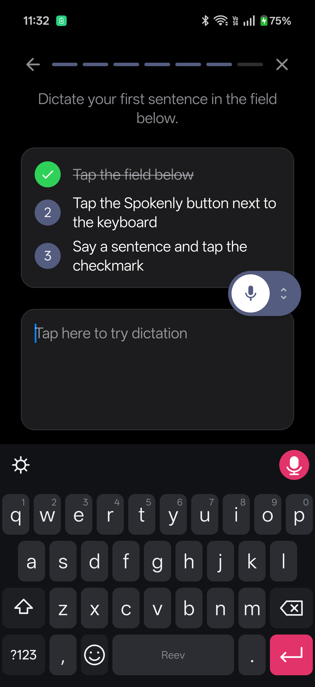
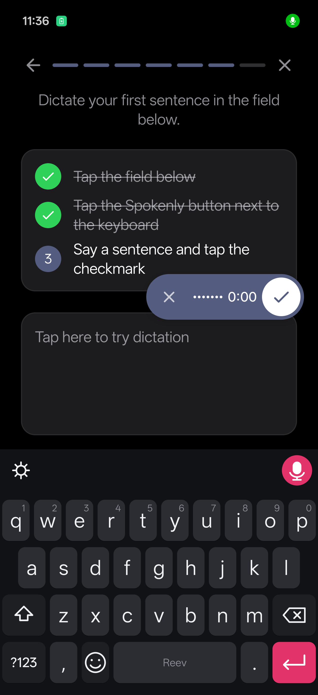
A SoundPool is loaded with two cues, raw/start and raw/end, played on stream USAGE_ASSISTANCE_SONIFICATION so they duck under media. Dictation runs in a foreground service typed microphone with an ongoing, low-importance notification titled Spokenly is listening on a dictation channel. If Android refuses the foreground start, the catch block sets the state back to idle, re-renders the bubble, raises a toast — "Android didn't let Spokenly start recording. Try again." — and stops the service cleanly. Nothing is left half-lit.
For Reev. ui/VoicePanel.kt and ui/OverlayView.kt already exist. The gap is not the panel, it is the state contract: make recording, transcribing, inserting and failed first-class states with their own shape, label and cue, and make every exit path restore idle in one call. An IME does not need the accessibility overlay at all — the panel can live inside the keyboard window.
Delivery is the part Reev can learn the most from, because Spokenly has to solve a harder problem than Reev does and its ladder shows exactly where the failures are.
The mode's delivery action gates all of it: insert, insert and send, copy only, or history only. A separate auto-copy preference forces the clipboard path for users who want to review before pasting.
Before the core delivers, the host answers cursorContext() by calling getSurroundingText(2000, 2000, 0) and slicing at the selection: everything before the caret, everything after. The core consumes it two ways.
Observed failure worth designing around. On this ColorOS build the accessibility input method never started in third-party apps: WhatsApp, Telegram and Chrome all showed a focused field and a keyboard, and no bubble. Inside Spokenly's own practice field — which sets privateImeOptions="app.spokenly.bubbleTest" — it worked every time. The bubble gate requires getWindows() to report an IME window and a non-null editor info; when either is missing it is torn down. An IME owns its connection outright, which is why Reev's commitText path will not have this hole.
A Spokenly mode is a record, not a toggle. The core's Mode struct carries an id, name, description, main prompt, shortcut, trigger words, output model, LLM provider and its fallback, transcription model, reasoning effort, custom system prompt, temperature, cleanup model, cleanup tone, activation mode, an app action (autoInsert / pasteAndSend / copyToClipboard / historyOnly), a smart-settings override and a bundle identifier. Modes can be reordered and moved; a shortcut claimed twice is stripped from the second mode with a log line.
Activation is one of automatic, push to talk or toggle. Trigger words switch mode mid-session — "TranscriptProcessingService: trigger word picked mode '…'" — and word replacements run as regex or literal, before or after the AI stage, so "reev" can become "Reev" without teaching the model anything.
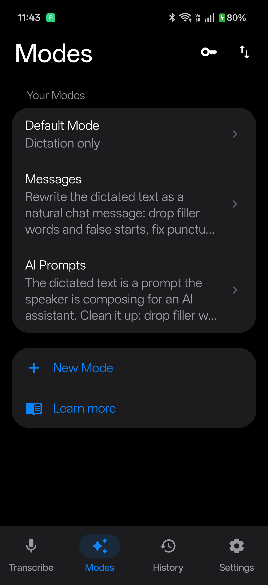
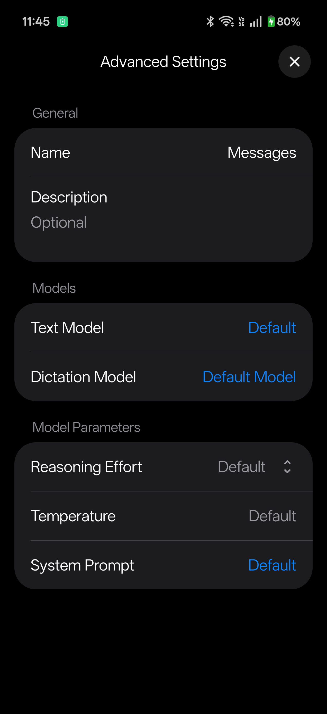
The built-in prompts are short, specific and constrain the output shape as hard as the content. These are verbatim from the app.
Messages. "Rewrite the dictated text as a natural chat message: drop filler words and false starts, fix punctuation. Keep the original language, greeting, wording, and details. Output only the message."
AI Prompts. "The dictated text is a prompt the speaker is composing for an AI assistant. Clean it up: drop filler words and false starts, fix grammar and punctuation. Keep the original language, wording, and details. Never write a new prompt about the text or add instructions of your own. Output only the cleaned-up text."
Both are wrapped by a shared system prompt that pins the format so no mode has to repeat it: an assistant whose task is transformation only, returning nothing but the transformed text, no commentary, no quotes, no markdown unless asked, preserving meaning, and a reminder that the input came from speech recognition. A tone: directive is appended from the mode's cleanup tone (unchanged, lowered, muted, email) and a before: line carries the cursor context.
Three stages, in order, each optional: mechanical polish (spacing, capitalisation, replacements), the cleanup model on-device, then the LLM transform if the mode has a prompt and a provider. Each stage emits a TransformationStage into a DictationSuccessData, which is what the history detail sheet renders as "Original transcription" beside the final output. The user can always see what was said and what was written.
For Reev. This is the highest-value piece and the one that fits a keyboard best, because a keyboard knows the package name before the first frame. Implement Mode(id, name, prompt, appAction, tone, temperature, modelOverride, triggerWords, activation) in Prefs.kt, ship three defaults, and resolve the active mode from the editor's package name in ReevService.onStartInputView. The transform belongs on a background dispatcher after STT, gated by the mode's delivery action. Reev's existing removeFillers flag becomes the tone-pipeline default rather than a standalone switch.
The flow is a paywall first, then an accessibility rationale, then practice — and the rationale is the best-written screen in the app. It states the mechanism, the benefit and the limit in three two-line rows: shows the button when you type in any app, inserts your text into the selected field, reads nothing else and collects nothing. The service description string repeats it for the system dialog.
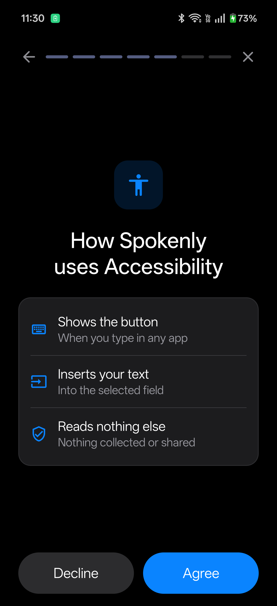
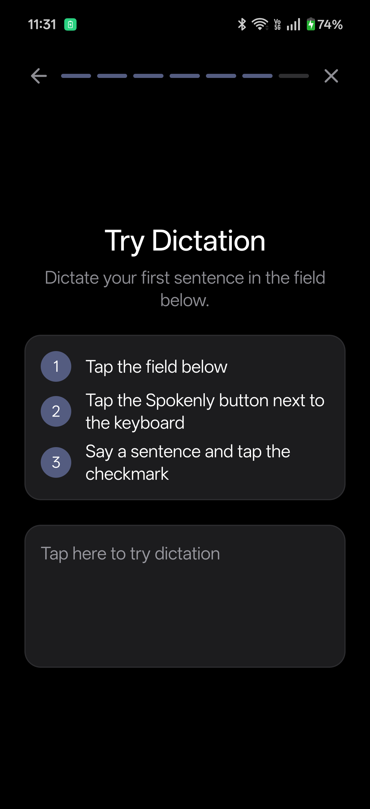
Practice is not a video or a tooltip. It puts a real field on screen, ticks step one when it is tapped, and only advances when a transcript actually returns — then closes on "The Spokenly button is ready! You can now dictate in any app with the Spokenly button." The user leaves having dictated once.
For Reev. Reev's 0.1.2 release already exposed every key, the mic and the voice panel to TalkBack — the vocabulary is there. What is missing is a rationale screen for the microphone and a practice loop before the user is dropped into a bare keyboard. Copy the row structure and the "reads nothing else" framing; it is the difference between a permission and a decision.
Settings, model catalogue, history and the result state are where dictation apps usually rot. Here each one keeps the same rules: one decision per row, a plain-language consequence, and a state that names what just happened. The point of showing them is not the feature list — it is that the restraint is systematic rather than a marketing veneer.
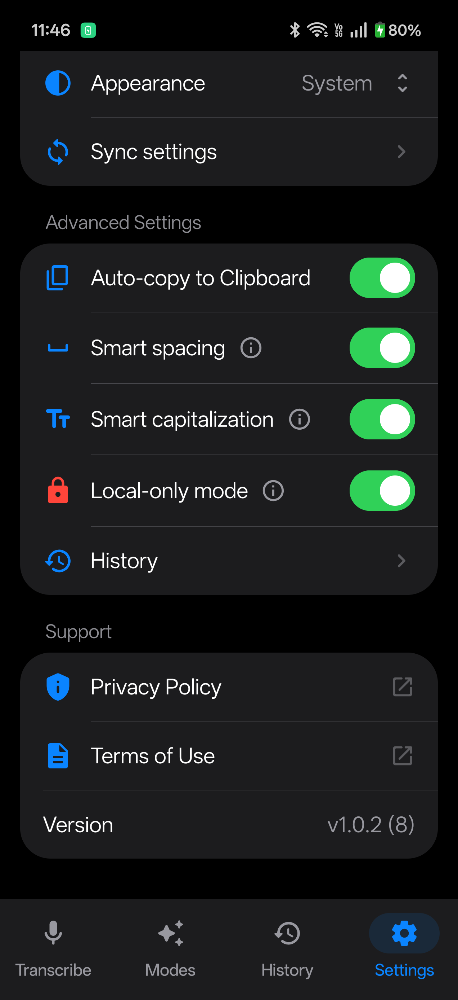
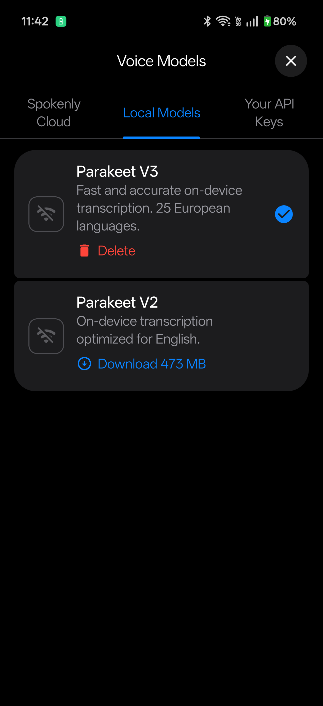
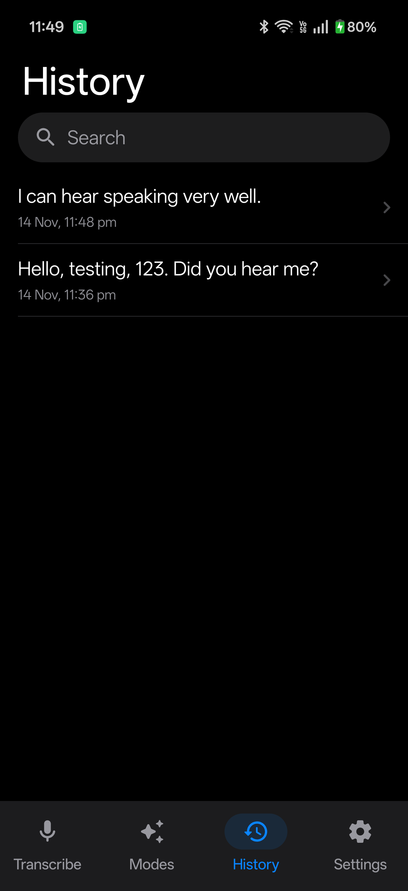
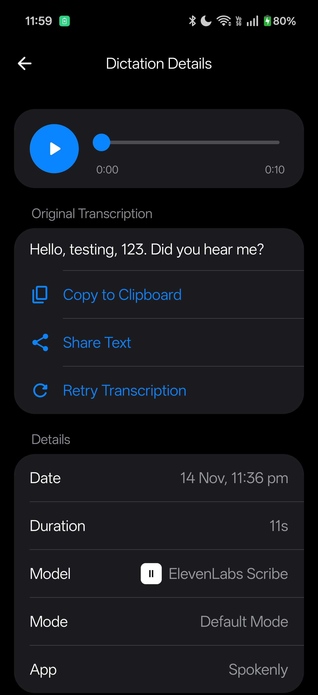
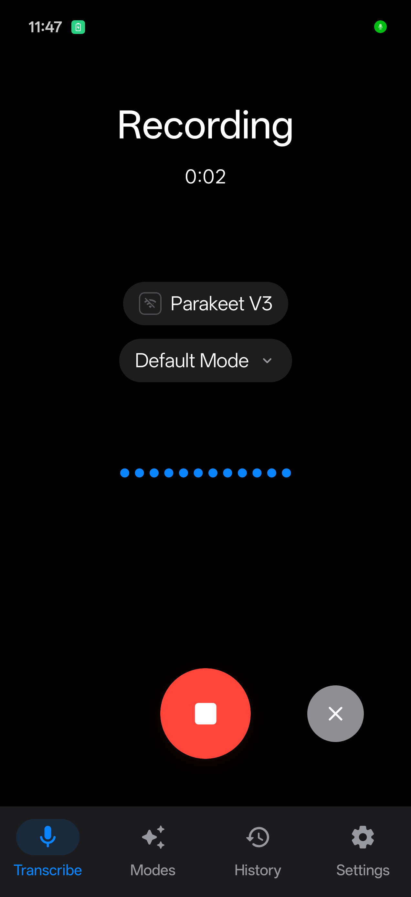
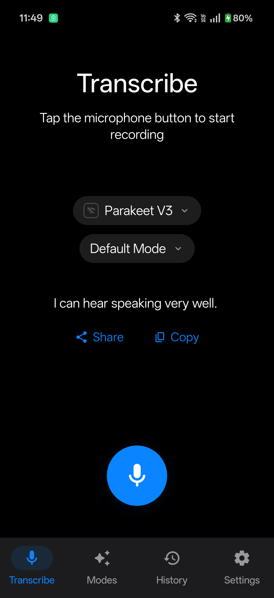
Note what is not gated: local models, cleanup, smart spacing, capitalisation, the bubble, history and the practice flow all work on the free tier. Only the hosted models, the desktop app and extra language coverage sit behind Pro. That is a defensible line for Reev to compare against, since Reev's free tier already includes on-device Parakeet and the user's own keys.
| Capability | Reev | Detail |
|---|---|---|
| Insertion into the focused field | Ahead | Native InputConnection.commitText as the IME. Spokenly needs accessibility and, on this device, mostly failed to appear. |
| On-device speech | Parity | sherpa-onnx Parakeet locally, model manager with verification. Spokenly additionally ships Whisper and a cleanup GGUF. |
| Cloud and BYOK breadth | Behind | Reev has four providers; Spokenly has sixteen plus any OpenAI-compatible endpoint, with streaming and Opus upload. |
| Cellar-level polish | Behind | No cursor context, no smart spacing, no smart capitalisation; autoCap is a blunt per-sentence toggle. |
| Modes and per-app action | Missing | No mode object, no prompts, no insert-and-send, no history-only. |
| Cleanup and tone | Partial | Regex removeFillers only; no punctuation model, no tone, no stage trace. |
| History and provenance | Missing | Spokenly keeps audio, original transcript, final output, model, mode, app, duration, with retry and share. |
| Onboarding and rationale | Behind | Permission activity exists; no rationale, no practice loop, no state-by-state guidance. |
| Hinglish and Odia | Ahead | Reev's lexicon, glide and Hinglish suggestions have no Spokenly equivalent; Sarvam is one of its BYOK rows but not the focus. |
| Subscription pressure | Ahead | Reev is free with your own keys; Spokenly charges ₹1,650/month after three days. |
| Tier | Work | Point of code |
|---|---|---|
| P0 | Read surrounding text at dictation start; apply spacing and capitalisation from it; pass it to cleanup | ReevService.onStartInputView captures getSurroundingText(2000,2000,0); new polish/CursorContext.kt; unit tests for the sentence-boundary cases |
| P0 | Voice panel becomes a state machine with a state contract and cue per state | ui/VoicePanel.kt, ui/OverlayView.kt; single setState() entry, idle restored on every exit |
| P1 | Mode object with three defaults, resolved by package name, delivering insert / send / copy / history-only | Prefs.kt + new ModeStore.kt; transform after STT in stt/Stt.kt; send via performEditorAction |
| P1 | Rationale screen and practice loop before first use | PermissionActivity.kt rework; practice field inside the keyboard, progress states |
| P1 | History store: audio, original, output, model, app, duration; retry and share | new history/ package, encrypted at rest like KeyVault |
| P2 | Cleanup model and tone directives; optional local punctuation pass | polish/, model shipped through ModelManager |
| P2 | Trigger words and per-mode activation; word replacements with before/after timing | mode store, session listener |
| P2 | Streaming providers with VAD commit and Opus upload | stt/WsSession.kt |
Working directory ~/.hermes/cache/scratch/spokenly/: base.apk, split_arm64.apk, pkg.json (manifest evidence), res.json (decoded resources), jadxout/ (full decompile), so/…/spokenly.strings.txt (native strings, 8,852 lines), en_copy.txt (378 English UI strings by file), and the eighteen screenshots reproduced here. Key source reads: app/spokenly/DictationAccessibilityService.java, defpackage/n4.java (delivery ladder), defpackage/c3.java (cursor context), defpackage/j10.java (editor filter), defpackage/fk.java (bubble states).
Prepared for Reev. Static analysis never executed the APK; runtime observations are from a CPH2745 on Android 16 with ColorOS 16, Spokenly 1.0.2 (8), local-only mode on and Parakeet V3 installed.